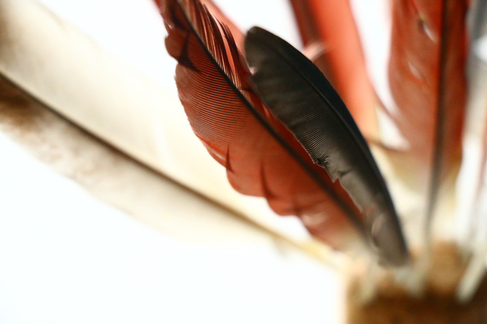

Hakkımızda
Kronoloji
-

2010-2012
Yürüyüş
Hayvanseverler ile birlikte doğa yürüyüşüne çıkıldı.
-
2013-2015
Bildiriler
Hayvanların Lüks ürünler için katledilmemesine yönelik yazılı ve sözlü olarak Bildiriler düzenlenildi
-
2016-2020
Seminer
Akdeniz Üniversitesi Atatürk Konferans salonunda hayvan hakları ve korunması hakkında seminer düzenlendi ve Hayvanseverler Topluluğu oluşturuldu.
-
2021-2022
Büyüme
Hayvanseverler Toluluğu 10 bin üzerinde üye ve 50 den fazla sosyal gönüllülük projesine katıldı.
-
2023-2024
Nesli Tükenenler için ulusal organizasyon
2023-2024 Yılları arasında Hayvanseverler Toluluğu ve Turkiye Nesli Tukenmekte olan canlıları koruma dernegi ile ortak organizasyon oluşturuldu.
-
Yeni Hedeflerimiz...